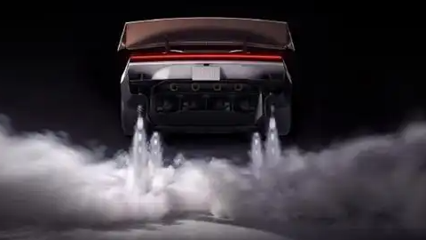

10月15日晚（北京时间10月16日），特斯拉在美国得州 SpaceX 火箭测试基地发布第二代 Roadster，原定10月1日，因天气推迟。现场演示相当激进：新车冲上近垂直的墙面后稳定吸附，随后腾空完成翻滚、跳跃，再平稳落地。
参数同样激进：基础版 0-96km/h 加速 1.9秒，选装 SpaceX 冷气推进套件可进入 1秒内；三电机四驱、峰值扭矩 10000N·m；中国市场订金 33.2 万元，预计 2028 年量产。
反常的是，特斯拉自己说它不承担走量盈利任务，是“技术旗舰与极限试验台”。那它到底图什么？
多数人以为提速靠电机，这次的答案在空气。新车搭载与 SpaceX 工程团队联合开发的 A71 冷气推进系统，靠约10个高压冷气推进器产生反作用力，实现姿态控制与极限机动——本质是把航天级工程下放到一台量产车上。
但必须提醒：据多家媒体核实，这些仍是发布时披露的性能指标，实际量产规格有待验证；更何况它有“跳票9年”的前科——2017年首发、原计划2020年交付，一再延期到2026年才真正亮相，量产还要再等约12-18个月。
从PPT到车库，这台车还有一段不小的距离。
技术旗舰不走量，意味着研发与制造成本无法靠销量摊薄，账面看是亏的。但价值在“外溢”：冷气推进、三电机协同、极限热管理，这些能力下放到走量车型后，才是真正的回报。
舆论则两极分化。有人赞这是技术奇观，也有人认为资源该投向自动驾驶的成熟落地。理想高管“硬哥”的评价很典型——“面目全非了，虽然很另类，但我觉得还是原始设计更帅”。
当车企开始比拼“能不能飞”，消费者真正需要的，可能仍是更可靠、更便宜的日常出行。
回到开头那个画面：冲上墙面、腾空翻滚、平稳落地——从2017年首发到2026年亮相，这台车用9年证明了特斯拉最擅长的不是造车，是把“不可能”先做出来给人看。
它大概率不是一门好生意，但它是一张技术路线图。对行业，是压力测试；对消费者，是提醒我们想象力还能走多远。